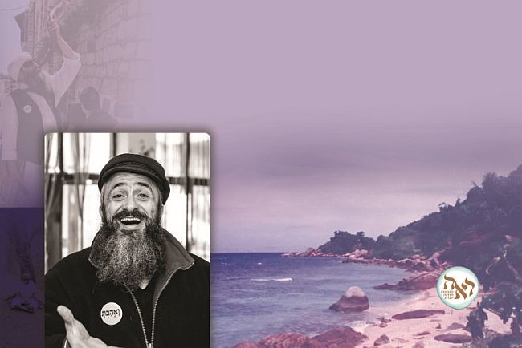

Smile Though Your Heart Is Breaking
He was an expert sharpshooter in the Israel Defense Forces, and his life was spared on more than one occasion. He dealt in jewelry in Japan and Australia, and he owned his own vacation island. He moved from one spiritual mentor to another, studied the teachings of the Far East, and went to the most
Translated by Michoel Leib Dobry

You may have met him escorting tour groups in the center of the Holy City of Tzfas, where he serves as a tourism coordinator for the Tzfas municipality, or had the opportunity to listen to one of his lectures in Jewish Chassidic mysticism. Nevertheless, you would still have a hard time believing that this skinny avreich with glowing eyes had been in the not too distant past a vigorous guide in Buddhist teachings running meditation workshops. Hundreds of people, both Jews and Gentiles, from all over the world streamed to the secluded island in Thailand which he owned and asked to participate in his workshops, which they had heard much about from afar. At the same time, he ran a thriving jewelry business with many stores in Japan and Australia selling his merchandise.
R’ Eyal Karoutchi began his spiritual journey, as he defines it, when he was in India. He had come there as part of a tour of the East after serving in the Israel Defense Forces as a marksman with the paratroopers’ brigade. While he had prepared to stay there for only six months, he eventually remained for twelve years, visiting another nineteen countries. “I obtained a book on Buddhism and read it avidly,” he said in explaining the reason for his remaining as long as he did. “Until then, every book I had ever read would put me to sleep. I didn’t like to read. Buddhism attracted me and therefore I stayed. I learned the various approaches and did meditation and yoga. I participated in Vipassanā workshops, during which I remained silent for several long days.”
He spent twelve years searching and probing, visiting remote monasteries, learning from the biggest experts, enduring powerful experiences and serious hardships, joy and disappointment, and learning various approaches in meditation. After a few years, he had become an expert in Hinduism, Buddhism, and Shamanism. Yet, despite all this, his soul could find no rest until G-d’s Divine Hand led him back to the path of his forefathers.
THE TERRORIST STOOD NEAR HIM WITH A DRAWN PISTOL
Eyal was born in Beersheva and raised in Ashdod. His parents’ home was traditional, but without much Judaism. “The little we did observe was fasting on Yom Kippur and eating matzos on Pesach. My parents didn’t like the chareidim, to say the least. Their memory had been emblazoned with some very unpleasant experiences about the seemingly uncompromising nature of ultra-Orthodox Judaism.”
Since he had been a young boy, Eyal liked to look at things inwardly, at their deepest and most profound level. In addition, he was a very sociable type who led the way for his friends. He had artistic hobbies and connected with social professions such as drama and the creative arts. He always participated and stood out in school competitions.
When he reached the age of military induction, it was clear to him that he would be joining an elite battlefield unit. Thus, he found himself volunteering for service in the paratrooper brigade, where he was sent to a course in marksmanship.
“By that time, I had already begun to learn the secret of breathing exercises,” Eyal recalled. As a sharpshooter, he learned to look at the whole picture while aiming at the objective. This also represented a methodology that eventually helped him to get closer to his Jewish roots and lead other Jews to do the same.
His three years of compulsory military service coincided with the first intifada. The casbahs and refugee camps bubbled with hostile terrorist activities. Even in south Lebanon, the terror organizations started getting bolder. “One day, as I was standing at my post on top of one of the casbah homes in Sh’chem, I looked to my left and noticed a terrorist pointing a gun directly at me. Stunned, I quickly regained my composure.”
Eyal and two other soldiers on duty with him immediately opened a massive barrage of gunfire in the direction of the alleyway where the terrorist had been standing. “In those days, there was no need for special permission from the IDF chief of staff to shoot at a terrorist. After just a few moments, the order to ‘cease fire’ went out over the radio, and we complied. Down below, I managed to hear a voice in Arabic cursing the Jews. When the company commander came and heard from us the reason for the shooting, he asked, ‘How can it be that the whole alleyway is riddled with bullets and there’s no terrorist killed by the gunfire anywhere to be found?’
“When the brigade commander came to the post, he was already more determined and fired a volley of insults at me. ‘Who’s going to believe you that a terrorist actually was pointing a gun at you? You’re a disgrace to the IDF. It was a mistake to invest so much time in you!’ These were some very uncomfortable moments. However, I firmly stuck to my position that I had seen a terrorist. At eight o’clock that evening, a General Staff jeep arrived bearing several members of the General Security Services (GSS). They had heard a radio report on the description of the terrorist I had given and they asked me to accompany them to the city’s hospital.
“It turns out that they had received information that someone requiring medical treatment had come to the hospital answering the description I had given. We entered one of the rooms, and there I saw before me the terrorist dressed in the same clothes I had seen earlier. ‘That’s the man,’ I told them. However, he vehemently denied the accusation. ‘It’s your word against his,’ the GSS agent warned me. ‘His attorney will get him off the hook.’ I thought for a few moments on how to prove my position, and then I asked for a flashlight to shine on the suspect’s body. My intuition told me that one of the bullets I fired must have struck him.
“And I wasn’t mistaken. When the flashlight shined on his trousers, we all noticed that they had a bullet hole. I asked him to roll up his pants and we saw that his leg was drenched in blood. This was clear proof that he had been wounded by a bullet I had fired.”
The GSS agents handcuffed the terrorist and took him to their interrogation cells, while Eyal could finally reassure his commanding officers that he was no longer a disgrace to the army…
In fact, he experienced numerous miracles during his military service. At the time, he still didn’t know to call these occurrences by their proper name, instead using the term “amazing events.”
At the conclusion of a most intensive and challenging period of military service, he sought some time for himself and an opportunity to take a rest. His commanding officer urged him to sign on with the professional army. While Eyal didn’t reject the idea outright, he still wanted some vacation first in the East. “I felt as if I was suffocating and I needed some air,” he recalled.
A MOMENT BEFORE COMPLETELY GETTING LOST
The plan was to fly to the East, spend about six months touring there, and then return to Eretz Yisroel to choose between studying medicine or rejoining the IDF as a career army officer. “The six months lasted for twelve years,” Eyal says with a smile. “We were three childhood friends together, graduates of IDF combat units. We planned to start the tour in Thailand and continue on to Burma, New Zealand, Australia, and finish the trip in the Philippines. We looked for the most difficult and challenging route. We brought an Indian road map and began an exhausting trip to the Himalayas.
“We were certain that this was a challenge well within our abilities to meet, but it wasn’t. After a few days, we realized that the Indian maps were meant for use by Indians only, and it turned out that we had taken the wrong path. We walked for several days without meeting a single person. The food we had brought with us was beginning to run out. We started to fear for our lives. This was a terribly frightening feeling. It was intensely cold and we walked between snow-covered mountains. Stopping was not a realistic option. One day, we noticed an avalanche directly in front of us. Trembling, we quickly ran in the opposite direction.
“We then discovered that our salvation had come. What we had seen was not an avalanche, but a local farmer who was throwing wooden planks from his hut, causing what appeared to be an avalanche. We danced with joy and whistled to get his attention. He noticed us and motioned that we should come over to him. We spent that night in a small goats’ pen near his wooden hut, after we had something to eat.
“We slept on benches, and under us were goats, dogs, and pigs. The stench was hard to bear, but we naturally had no complaints. The next morning, the farmer gave us directions to the nearest village and we realized how we had gotten lost.”
After another few joint trips, the three friends decided to go their separate ways. Eyal was running out of money, and he decided to set out for Japan, where Israelis sold jewelry out of special street carts. “Success shined on me,” he says. “The vendors’ stands in Japan were literally a ‘path of gold.’ Once I earned one thousand dollars in seven minutes. Over a period of three months, I worked in sales, and with the money I earned, I continued touring. According to this arrangement, whenever my money ran out, I resumed my sales activities.”
At a certain stage, Eyal ran his own jewelry business in Japan. It was specifically at this time when things financially were going so well that he came across a book in English entitled ‘The Celestine Prophecy.’ “I read this book from cover to cover, even falling asleep with it. As time passed, I obtained additional books dealing with spirituality. Prior to this, I hadn’t been looking for anything. I was quite happy with my life and my daily routine. However, these books opened for me a window to a world I never knew existed within me. The mystery to the universe as presented in these books gripped me.
“I went from one book to another as I looked for more books to buy on these subjects. Later, I acquired experience in psychotherapeutical approaches among ‘the Gentile nations.’ It can safely be said that I was into them up to my neck.”
At first, Eyal was very fascinated by the teachings of the Indian shamans. He emphasizes that at no time was he ever drawn to idol worship; it wasn’t the mysticism that aroused his interest, rather the wisdom, the understanding, and the depth. After he felt that he had acquired all he needed from Shamanism, he found himself getting into Buddhism. “For three years, I went around to various monasteries in south Thailand, Burma, Nepal, and India, holding silent journeys and learning the secrets of meditation. At the same time, I would continue to visit Japan and maintained my jewelry business, while also opening a similar business in Australia.”
Some unpleasant encounters with the Japanese underworld convinced him to sell his business in Japan and devote his time to Buddhism. He spent three years studying, experiencing, practicing, and reading numerous books dealing with the subject. However, looking back, he now realizes that whenever he felt that he had found what his soul truly needed, he soon began to feel himself consumed by a sense of emptiness. “Then, an Israeli friend from Eretz Yisroel, Mr. Udi Bilu, who was my yoga teacher and brought this art to Eretz Yisroel, advised me in one of our conversations to seek out a guru for myself, and he referred me to his guru in Varanasi, India.
“Later, I came to another monastery in India and I noticed a monk silently looking at me. This continued for two whole days, looking at one another without saying a word. On the third day, he finally opened his mouth and asked me where I came from. ‘From Israel,’ I replied. He then suggested that I come with him on a two hundred kilometer walk in the Himalayas to the source of the Ganges River, one of the largest in the world – the Gichon River, as mentioned in Seifer B’Reishis.
“After several days of walking, we arrived at the village of Gangotri and entered the cave where we would be staying. During our trip, I realized that my traveling partner was a well-known guru, a very pleasant and wise person, who guarded the cave of one of the biggest gurus in India. He introduced me to three of his friends, who were also gurus. They welcomed me warmly and each of them asked me a question. The third one asked me where I was from, and I said that I was from Israel. He then asked to my surprise if I had ever heard about the Talmud. The truth is that I was very perplexed; they knew more about Judaism than I did. From where did they get their knowledge?
“I was there for several days, and before I came down from that mountain, the guru with whom I came asked to speak with me.
“‘Are you planning to return here?’ he asked. I said that I was.
“‘You won’t be coming back here,’ he declared. ‘You’re on a journey of self-discovery.’ He got up from the wooden box he was sitting on, opened it and removed several scrolls.
“‘Who is the wisest of men?’ he asked, and I foolishly replied, ‘The guru who founded Hinduism.’ He rejected my answer and said, ‘No. King Solomon.’
“‘What?’ I was shocked. ‘How is it that the whole world doesn’t know this?’ He looked at me as if I was a total idiot. He then explained to me that the world is run by money and power, and therefore, I would never hear this simple truth. He shared with me the historic fact that their ‘sages’ had met Shlomo HaMelech, wrote down what he told them, returned to India, and came to the conclusion that Shlomo was the wisest of men.”
The meeting in that cave managed to arouse some troubling thoughts within Eyal. Here he was, searching for his path in life in foreign lands, and for some reason he had failed to look in the direction of his own people, his heritage, and his homeland.
After he completed his professional studies in yoga, guided imagery, and various approaches in alternative medicine, he tried to find a little peace and tranquility for himself. Thus, he eventually found himself arrive at a quite island in Thailand. However, even there, Yiddishkait pursued him. Several long days of contemplation led him to understand that the Hand of Divine Providence was guiding him at every step.
“I FELT A LONGING”
By this stage, Eyal had already acquired extensive and deep knowledge in the writings of Buddhism, Hinduism, and Shamanism. Yet, he still felt that he was missing something. He was now living on a small island in Thailand called Koh-Tao. On that island was a beautiful coastline area with about fifteen rickety huts without electricity or running water. He bought the island, renovated the structures, and opened a mystical center for the study of yoga and meditation, offering alternative treatments and spiritual guidance. “Jews and non-Jews alike started coming to the village from all over the world – people looking for answers.”
The place was pastoral; coconut, papaya, banana trees and their leaves covered it from every direction. There were times when Eyal was quite certain that he had found calm and tranquility for his soul. Then, local residents began to envy his success and caused damage to his vacation village, claiming that he was harming their livelihood. “At first, I was amazed how people educated in spirituality, love, and acceptance could act this way. However, I very quickly awoke from my naïveté, and I realized that wherever you go, there are those who are connected to what they learned and those who are not.”
Over a period of three years, Eyal operated the mystical retreat and he earned much appreciation among those who love the mystical genre. “The retreat was constantly filled to capacity. Nevertheless, I periodically had to take trips to various places throughout the globe to complete my learning from prominent experts, particularly in the field of alternative health, which I had started taking an interest in during this period. A connection I established with a young Australian Jew led me to travel ‘down under’ and pay him a visit on his plantation.
“This young man knew that I was an expert in meditation, so he gave me a gift: an audiocassette by a Jewish rabbi entitled ‘Jewish Meditation.’ When I saw this, I became quite angry. ‘Even this the religious want for their own purposes?’ Even before I heard the tape, I decided that when I next visited Eretz Yisroel, I would give the tape to Channel 2 and ask them to write a story defaming traditional Judaism. The cassette tape remained in my travel bag for two years until I made another visit to Australia, staying at the home of Israelis living in a remote village. It was then that I decided to listen to the tape.
“This was on a Friday afternoon. I longed for some home cooking and I decided without any explanation or knowing the reason why to prepare cholent for Shabbos. Their house was built in a magical little hamlet along the shoreline, with tall majestic trees touching the clear blue skies. All those who came to the house went straight to the beach, while I started cooking as I listened to the audiocassette. With each passing moment, I grew more astounded. When the cassette was finished, I ran into the kitchen to get some plastic wrap to protect it from damage… One fact that particularly aroused my attention was the connection he made between meditation and the physical and material world, something that didn’t exist in the methods I was familiar with.
“I considered myself to be an expert in meditation, and I quickly realized that this lecturer knows all the secrets. The lecturer’s name was Rabbi Laibl Wolf.”
It was at this stage that Eyal became exposed to a far deeper level of meditation, and it sharpened his understanding that all knowledge among the Gentile nations is actually a link to reaching the wisdom of Judaism. “The Jewish spark hidden within me began to illuminate within me that day. It was amazing. All the non-Jewish teachings I had learned evaporated in an instant. A week later I was in Melbourne, and when my friends went out on an excursion, I decided to go and visit the synagogue. I sat there, took a siddur, and began reading from the start of the morning blessings. As I read, tears filled my eyes. My heart was overcome with deep emotion and I couldn’t understand why.
“All the energy, thoughts, and feelings that until then had been directed to the ‘sitra achra’ left me in a moment and moved to the side of holiness, even though I still failed to understand what was happening to me and what I was really feeling. It was as if a hidden hand had brought me over to the other side.
“Suddenly, the door opened, and a Jew with a white beard and wearing a cap entered the shul. He came straight over to me and began a conversation. When he introduced himself, I almost fainted. His name was ‘Laibl Wolf’…the speaker from the cassette tape. What were the chances of such a thing happening? None. Yet, it did happen…
“When he invited me to his house for Shabbos meals, I immediately agreed. The Hand of G-d had made it all possible, and from that moment until today, I have been in close contact with him.”
Eyal felt that G-d’s Divine Mercy was protecting him. After leaving Australia, he returned to the island he owned as a completely different person. Among his possessions were s’farim on Yiddishkait and Chassidus, which he read with great interest. “‘Torah Ohr’ and ‘Likkutei Torah’ shattered my entire comprehension of the idolatrous teachings in which I had previously been submerged. During my kiruv process, I received much help from the Rebbe’s shluchim in Bangkok, Rabbis Nechemia Wilhelm and Yosef Kantor, and the shluchim in India, Rabbi Zohar David, Rabbi Shimi Goldstein, and Rabbi Dror Shaul. In those days, I meticulously learned Chassidus with Rabbi Sholom Dovber Marzel, who was then on shlichus in Bangkok.”
JEWISH MEDITATION – IS THERE SUCH A THING?
It wasn’t long before Eyal realized that there was nothing more for him to look for in Chutz La’Aretz. He sold the island and flew back home to Eretz Yisroel.
As soon as he returned, he changed his clothes and went to learn at the Chabad yeshiva in Ramat Aviv, headed by Rabbi Yosef Ginsburgh. He connected well with the yeshiva’s rabbanim and mashpiim, studied Chassidus with them, and filled in the gaps in his Yiddishkait over a period of about seven months.
At the conclusion of this period, he began working with youth at-risk at the “Chut HaMeshulash” Center in Yerushalayim. After his wedding, he established his residence in Tzfas, where he ran the department for Hebrew speakers at the ASCENT Institute for eleven years.
During this time, as a very dominant and spiritual personality, R’ Eyal was privileged to provide strong guidance and direction to thousands of people throughout the world, Jews and non-Jews, young and old, individually or in organized groups, through the various tools and techniques he studied. Today, he provides guidance and supervision to teachers in yoga and Jewish meditation, runs workshops – all in accordance with the teachings of Chassidus and the Rebbe MH”M.
When you say “Jewish meditation,” what exactly do you mean?
“Not many people know that the definition of the word ‘meditation’ is ‘to make a connection, devise, ponder.’ This can be explained in a variety of ways: quiet, calm, detachment, connection, release. I connect in particular with the opinion of Rabbi Aryeh Kaplan, who calls it ‘devotional contemplation.’ The purpose is to take a certain subject, verse, picture or idea, contemplate upon it and nothing else for a period of time, and fill oneself with it. This presence leads to an inner avoda that brings calm and tranquility. This is a means of treatment in every respect. When we say ‘Jewish meditation,’ it means contemplation on a valued Jewish concept based on Torah sources.”
Did the Rebbe relate to this subject?
“Over the years, many people spoke with the Rebbe on this matter, and in the Rebbe’s opinion, he approved of meditation as a mode of treatment – kosher meditation, of course. In a farbrengen from Yud-Gimmel Tammuz 5739, the Rebbe spoke at length about the need to provide kosher ‘meditation.’ Some time later, the Rebbe turned to Rabbi Yaakov Landau, and he thereby received information that various ultra-Orthodox authorities had ruled against this approach.” (see box)
Is there an essential difference between regular meditation and what’s called “Jewish meditation”?
“As I noted earlier, there’s virtually no outward difference between the various approaches, except when it comes to sitting. As is known, when the sages of Israel would enter a state of contemplation, their heads would fall to their knees, while non-Jewish scholars sit with their backs straight. In essence, the difference is quite dramatic: Gentiles contemplate on the beauty of Creation, while Judaism ponders on the garden of Torah. While the gentiles are engrossed with contemplating on the ‘yesh,’ Judaism deals with the wisdom of the ‘ayin.’”
If we’re talking about contemplation, then why is it called “meditation”?
“The Rebbe sees no problem with the use of this word, even noting it in his letter to Rabbi Landau. There is, however, a problem with the word ‘mantra,’ which does have a connotation of idol worship. Just because there are people who use the word ‘meditation’ for nonsensical reasons, does that mean that we should refrain from using it? Since there are non-Jews who bow down to the sun and moon, should we therefore not derive benefit from sunlight or moonlight? Practically speaking, ‘meditation’ is a ‘borrowed name’ to spread Torah and mitzvos among Jews.”
You’ve been dealing with spreading Yiddishkait through meditation for several years now. Have your efforts borne fruit?
“There are many fruits, as dozens and dozens of Jews, men and women alike, have come closer to their Jewish roots. As the Rebbe noted in his letter, people realize that the whole subject of incense and gurus is sheer nonsense and has no connection to the essence of meditation. Therefore, when people come to us who have previously learned the approach through Gentiles, they are enthralled. In the past, they made no connection to worldly matters; now they engage in contemplation not to cut themselves off for its own sake, but in order to make that connection.”
The Rebbe constantly speaks about how we are standing on the threshold of Redemption. How do you see this in your work?
“They will be clarified and whitened” – we are on the way to the promised Redemption and it’s clearly happening now before our very eyes. This subject seems about as far as one can get from the world of Judaism; this seemingly represents the depth and wisdom of the nations of the world, while we harness it to bring Jews closer to the path of Torah. In general, contemplation and devotion enable us to reveal the light the Rebbe speaks about in his holy sichos, stating that in order to see this light, we have to ‘open our eyes.’ This is part of the avoda.
“You have to understand that the subject of meditation, an important and powerful tool in non-Jewish mysticism after which thousands of souls go astray, has undergone a process of purification by Jews, ‘man’s steps are established by G-d,’ and has been revealed as part of the amazing world of Yiddishkait. Based on the art of contemplation as described at length in Tanya, this tool has been transformed into a means of bringing Jews closer to Torah.
“Man by nature is not limited in his abilities; he came into the world to illuminate himself. The only thing that limits him is himself. The way in which a person chooses to see the reality and the way he chooses to react to what happens around him are what determine the measure of joy and pain that he will experience.”
ALONG THE LANES OF PICTURESQUE TZFAS
Together with his work as a tourism coordinator in Tzfas, R’ Eyal serves as a highly sought-after speaker in Chabad Houses throughout Eretz Yisroel and the world at-large. He maintains an active Internet site and gives over courses and classes drawing their content from the teachings of Chassidus and the sichos of the Rebbe, Melech HaMoshiach.
He has a special warmth for the Holy City of Tzfas and its magical alleyways. “The Rebbe says that the potential for tourism in Tzfas has not been fully utilized; Tzfas belongs to the spiritual dimension. In order for tourism to thrive here, they must consider this dimension and connect it to this attractive location, and I try to do this as part of my job,” R’ Eyal says as he concludes his interview with us before rushing out to accompany another group of tourists.
LOST TRIBES IN JAPAN?
During one of his journeys in Japan, R’ Eyal Karoutchi made his way to the northern city of Aomori. To his great surprise, he discovered there that the local residents spoke an unfamiliar language which was not Japanese. “As I listened carefully to the language, I heard Hebrew words such as Aba and Ima. The most amazing thing was that the people used sounds similar to the letters ‘Ches’ and ‘Ayin,’ which incredibly do not exist in Japanese. I inquired among the locals as to why they spoke in a different language, but I received no explanation.”
When R’ Eyal finished his visit on the island, he went down to the highway and headed for Osaka. “Departing from my normal custom, I decided to try and reach my destination by hitchhiking. After a few minutes, a truck stopped for me and the driver said that he was also on his way to Osaka, adding that he would be stopping directly across the street from the place where I would be staying. As I got into the truck, I noticed a Magen David hanging near the rearview mirror. Amazed, I asked him about it. He replied that he considered it a symbol of strength.
“When he saw that I wasn’t satisfied by this answer and that I was really interested in hearing the reason why, he shared a story with me that his family had maintained for generations. Once he was certain that I was Jewish, he told me about two lost Jewish tribes that had come to settle on the islands during Japan’s Shogun era. At first, the local residents wanted to wage war against them. However, once they were convinced of their peaceful intentions, they permitted the newcomers to settle on the premises. Regrettably, these tribes completely assimilated over the years and the local language intermingled with the language spoken by those Jewish tribes.”
Eyal was stunned by this story. As he was then in the early stages along his journey to traditional Judaism, this made the discovery even more exciting. His curiosity had been piqued by the unanswered question about the local language, and here he gets a lift from a truck driver who amazingly provides the explanation. Eyal felt that G-d had made certain to answer his question. Several years later, when he was already a chassid, he was invited to New York to give a lecture at one of the Chabad Houses in Manhattan before a group of young people on their own spiritual journey.
A large crowd of Israelis already fascinated by Eyal’s life story was waiting for him at the Chabad House. He proceeded to tell them about his experiences until he finally found his Creator. Among the things he told them about was the meeting with the Japanese truck driver who drove him to Osaka. “When I finished the lecture, one of the T’mimim participating came up to me and said that the Rebbe had a conversation with Rabbi Lau, during which he mentioned the opinion that some of the lost tribes had come to Japan.”
THE REBBE’S POSITION REGARDING KOSHER MEDITATION
In a letter to Rabbi Yaakov Landau, rav of B’nei Brak, on the subject of meditation, the Rebbe MH”M writes: “…The stated halachic ruling, which appears also to be included in his own text, gives its reasoning and argument that there is also involved the matter of idol worship, at least accessories to idol worship, and this is one of the three things [on which it is said] ‘Be killed and do not transgress.’ However, the matter of seclusion and contemplation, etc. in and of itself – the aforementioned did not invent (G-d forbid) this treatment, nor is its success dependent upon them, G-d forbid. And the burning of ‘incense’ and the like is not its main aspect according to the simple understanding.
“Therefore, in accordance with the manner of our Sages, of righteous memory – ‘Should the whole world be destroyed on account of fools?’, I have suggested that it would be appropriate, correct, and perhaps even essential that he (himself or at least those who do his bidding) consult in these matters with G-d-fearing medical experts in the field of nerves, tranquility, and mental illness, etc. He should give them the obligation (or more correctly – privilege) to add the study of therapy and treatment in this area through self-seclusion and contemplation, etc. Afterwards, they will publicize this as much as possible, – particularly as this will result in healing for many more infirmed people in need of a cure. This will also be an effective means of extricating them from the ‘guru’ attracting them with the bonds of this treatment, once they see that it’s possible to do this without incense by a G-d-fearing man or woman, etc. And of course, there is no need for elaboration to you and others like you.
(‘Heichal Menachem’, Vol. 1, pgs. 48-49)
Nosson Avrohom. "Smile Though Your Heart Is Breaking." Beis Moshiach, no. 1147 (December 26, 2018).